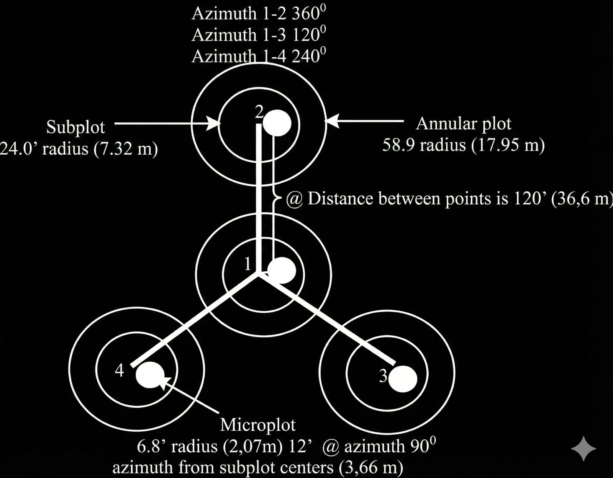

Tentang Azimutree
Azimutree adalah aplikasi Android untuk membantu penelitian kesehatan hutan dengan metode Forest Health Monitoring (FHM). Aplikasi mencatat lokasi Titik Ikat, klaster, plot, dan pohon, lalu menampilkannya pada peta digital. Kompas dan radar membantu pengguna menemukan kembali lokasi penelitian di lapangan.
Latar Belakang dan Tujuan
Pengamatan berulang sering melibatkan perubahan vegetasi, kondisi lingkungan, dan pergantian peneliti. Koordinat yang hanya tersimpan dalam tabel dapat menyulitkan pencarian lokasi saat kembali ke lapangan. Azimutree menghubungkan data tersebut dengan peta dan panduan arah untuk menjaga konsistensi lokasi pengamatan.
Fokus aplikasi adalah pencatatan, visualisasi, dan navigasi lokasi. Pencatatan lengkap nilai kesehatan pohon atau hutan berada di luar cakupan fitur yang dijelaskan di sini.
Konsep Titik Ikat dan Klaster Plot
- Setiap klaster memiliki satu Titik Ikat sebagai referensi awal untuk menemukan lokasi penelitian.
- Satu klaster memiliki maksimal empat plot. Plot 1 menjadi pusat klaster; plot lain berada di sekitarnya.
- Setiap plot dapat memiliki beberapa pohon, dengan posisi yang mengacu pada plot tersebut.
- Plot pertama dibuat dengan referensi Titik Ikat. Plot yang sudah tersimpan dapat dipilih sebagai referensi untuk plot berikutnya.
- Posisi dapat dimasukkan melalui lintang/bujur atau dihitung dari azimut dan jarak. Pemilih koordinat di peta membantu menentukan posisi secara visual.

Survey Lokasi
Survei dimulai dengan mendekati Titik Ikat menggunakan GPS dan peta kecil. Setelah objek ditemukan secara fisik, pengguna menuju Plot 1 berdasarkan azimut dan jarak referensi, kemudian memilih plot lain atau mencari pohon dengan radar.
Pusat radar adalah pusat plot, bukan posisi ponsel. Jarak referensi di tahap navigasi plot merupakan jarak pengukuran lapangan. Konfirmasi kedatangan tidak mengganti koordinat tersimpan dengan koordinat GPS. Sesi dapat dilanjutkan setelah kembali ke Beranda.
Penyimpanan Awan dan Berbagi Data
Data penelitian publik dapat dicari dan diunduh tanpa login. Login Google diperlukan untuk mengunggah serta mengelola data sendiri. Klaster dikelompokkan dalam folder lokasi penelitian yang dapat diatur publik atau privat; folder baru secara default bersifat publik.
Unggah dan unduh dilakukan manual. Salinan lokal tidak berubah otomatis ketika data awan diperbarui. Excel tetap tersedia untuk impor, ekspor beberapa klaster, dan cadangan data.
Teknologi
- Flutter untuk antarmuka aplikasi Android.
- SQLite untuk menyimpan data penelitian lokal.
- Mapbox untuk peta dan pencarian lokasi daring.
- Firebase Authentication untuk login Google opsional.
- Cloud Firestore untuk data penelitian awan, profil, status layanan, dan catatan versi.
Data, Akun, dan Izin Perangkat
- Data penelitian utama disimpan di perangkat. Data yang Anda pilih untuk diunggah akan dikirim ke Penyimpanan Awan.
- Folder publik memungkinkan pengguna lain mengakses dan mengunduh datanya. Periksa visibilitas folder sebelum berbagi.
- Gambar disimpan sebagai link. Pastikan gambar yang ingin dibagikan dapat diakses penerima.
- Profil awan mendukung perubahan nama tampilan. Penghapusan akun memerlukan autentikasi ulang Google dan menghapus profil serta data awan milik akun, tetapi mempertahankan data lokal. Akun Google Anda tidak dihapus.
- Izin lokasi diperlukan untuk posisi pengguna dan navigasi GPS. Pemilih file atau folder digunakan saat impor dan ekspor; permintaan akses mengikuti versi Android dan fitur yang digunakan.
- Internet diperlukan untuk peta daring, layanan awan, login, dan catatan versi. Penyimpanan lokal tidak berarti seluruh fitur peta tersedia offline.
Cara menghapus akun dan data →
Panduan dan Ketersediaan Fitur
Informasi ini mencakup pengembangan terbaru Azimutree, termasuk Titik Ikat, Survey Lokasi, dan Penyimpanan Awan. APK publik v1.1.26 yang saat ini ditautkan berasal dari 26 Januari 2026 dan mendahului penambahan fitur-fitur tersebut. Cocokkan panduan dengan versi aplikasi yang Anda gunakan.
Buka panduan penggunaan → Lihat rilis APK →
Open Source dan Dukungan
Azimutree dikembangkan oleh Asid30 dan tersedia dengan lisensi MIT. Kode serta petunjuk pengembangan dapat dipelajari di GitHub. Pengguna aplikasi tidak perlu mengatur API key sendiri.